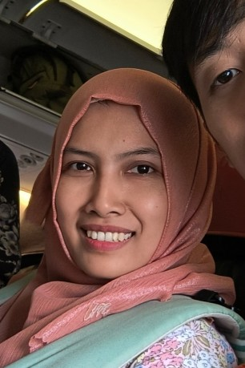
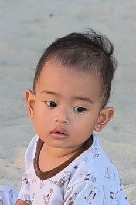
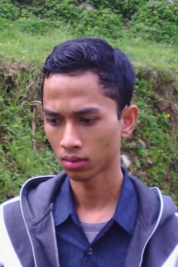

SILSILAH IBU ENI WIDJAYATI
Data Per-tanggal 28 Mei 2024
-
 WAHYU PURNOMOJATI
WAHYU PURNOMOJATI
Suami
Boyolali, 19 Desember 1964
 ENI WIDJAYATI
ENI WIDJAYATI
Anak Ke-3 Ibu Kamilah
Boyolali, 3 April 1968
-
SHOFIYYUL FUAD
Anak Ke-1 Ibu Eni Widjayati
Boyolali, 15 November 1990
AYU YULIANI HERA RAHMADEWI
Istri
Blora, 14 Juli 1993
- AHMAD EVREN ARKANA
Anak Ke-1 Ibu Ayu Yuliani
Balikpapan, 29 Agustus 2022
-
 RIQQOH KHOFIYA
RIQQOH KHOFIYA
Anak Ke-2 Ibu Eni Widjayati
Klaten, 27 Juni 1994
 ANDIKA KUNCORO WIDAGDO
ANDIKA KUNCORO WIDAGDO
Suami
Boyolali, 2 Juli 1991
-
AHMAD ADL BARELVI
Anak Ke-3 Ibu Eni Widjayati
Boyolali, 26 Mei 1996